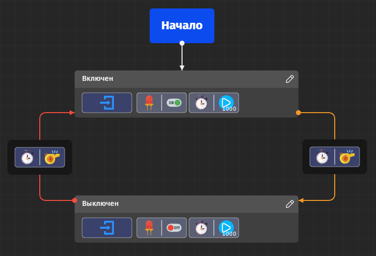

- На боковой панели выберите раздел Документ (значок в виде трёх полосок);
- В появившейся вкладке нажимаем на Создать...;
- В диалоговом окне на первой вкладке выбираем схему для платформы Arduino Uno или Arduino Micro. После выбора схемы, появится поле редактирования машин состояний;
- На боковой панели выберите раздел Проводник (значок в виде кубика);
- В появившейся вкладке нажмите кнопку Добавить... Появится диалоговое окно выбора компонента;
- Выберите компонент LED, введите название компонента и номер пина, к которому подключен светодиод, а затем нажмите Добавить. В списке компонентов появится новый компонент с введённым ранее названием и соответствующим значком;
- Проделываем то же действие из пункта №6 c компонентом Timer, но без номера пина, так как этот параметр отсутствует у компонента типа Timer;
-
Дважды нажимаем левой кнопкой мыши на поле редактирования. На месте клика появится новое пустое состояние;
При создании первого состояния рядом с выбранным состоянием появится элемент Синего цвета, обозначающая его начальным процессом машины состояний. В любой момент по нажатию на правую кнопку мыши на любое из состояний, вы можете изменить начальное состояние (Редактировать→Назначить начальным).
-
Дважды нажимаем левой кнопкой мыши на заголовок состояния или один раз на иконку карандаша. После переименуйте состояние на Выключен и нажимите на клавишу Enter, либо нажмите левой кнопкой мыши за пределами заголовка состояния;
Для отмены переименования нажмите клавишу Esc.
- Под заголовком дважды нажимаем левой кнопкой мыши на пустую область состояния. Появится диалоговое окно для редактирования состояния;
- Вверху в левом выпадающем списке выберите событие System, а в правом выпадающем списке действие onEnter.
-
Теперь нажмите кнопку с плюсом справа от области Делай В диалоговом окне выберите действие Timer → Start, а в появившемся ниже блоке interval введите 1000 (это количество миллисекунд). Нажмите Сохранить;
В списке раздела Делай появится пиктографические изображения созданного Вами действия.
- Чтобы удалить действие из списка в разделе Делай, достаточно выбрать его и следом нажать кнопку с иконкой минуса. После чего, выбранное действие будет удалено из списка;
-
Теперь самостоятельно создайте только что удалённое действие из пункта №12 и добавьте ещё одно действие LED1 → off;
Если вы допустили ошибку в создании действия, то в списке при двойном нажатии на действие Вам откроется окно для его изменения.
- Зажмите левой кнопкой мыши любое Ваше созданное действие в списке раздела Делай и перенесите его поверх другого действия. После чего они поменяются местами.
-
Создайте ещё одно состояние самостоятельно, но с такими свойствами: Имя — Включен, Событие — System → onEnter, Действия — LED1 → on, Timer → Start(1000);
Для быстрого создания подобного состояния, выберите уже созданое состояние и нажмите сочетание клавиш Ctrl+C, а затем Ctrl+V. Поверх копируемого состояния появится его копия, нажмите на неё один раз и перенесите её в сторону, чтобы оба состояния были видны в редакторе.
- Если вы создали состояние с нуля, то переходите к следующему шагу, если же вы создали копию, то переименуйте её на Включен. Затем дважды нажмите на событие и выберите System → onEnter, потом так же измените действие LED1 → off на LED1 → on
- Нажмите правой кнопкой мыши по последнему созданному состоянию и в появившемся контекстном меню выберите раздел Редактировать, затем Назначить начальным. Рядом с выбранным состоянием появится элемент синего цвета, обозначающий его начальным процессом машины состояний;
- Наведитесь курсором на начальное состояние и нажмите на него один раз, затем переведите курсор на появившуюся на рамке состояния иконку со знаком плюс и потяните до другого состояния. Появится диалоговое окно для редактирования нового перехода (условия);
- В появившемся окне выберите событие Timer → timeout. Нажмите на кнопку Сохранить;
-
Создайте теперь в точности такой же переход, но уже в обратную сторону (от обычного состояния до начального);
Как и состояние, вы можете сделать копию перехода, нажав по очереди Ctrl+C, Ctrl+V, затем через контекстное меню (открывается по нажатию на правую кнопку мыши) можно поменять исход и цель (начало и конец).
-
Для просмотра кода Вашей машины состояния нажмите правой кнопкой мыши на пустом пространстве поля редактора, в появившемся контекстном меню выберите Посмотреть код. Код машины состояний появится в новой вкладке и автоматически перевёд Вас на неё;
При нажатии правой кнопкой мыши на состояние или переход так же открывается контекстное меню, где вы можете посмотреть их код отдельно.
- Подключите плату Arduino Uno или Arduino Micro к компьютеру;
-
Прежде чем скомпилировать схему научимся добавлять заметки;
При нажатии правой кнопкой мыши на пустом пространстве поля редактирования, в появившемся контекстном меню выберите Добавить заметку, после чего на поле редактирования появится небольшой объект, в котором можно написать свою заметку (комментарий).
-
На боковой панели выберите раздел Компилятор;
Если вы не успеваете доделать схему до компиляции, то на левой панели нажмите на кнопку Меню. В появившейся вкладке нажимаем на Сохранить как... или Сохранить. Позже через меню вы можете открыть незаконченную схему.
-
В разделе компилятора нажмите на кнопку Скомпилировать;
Запомните! Для работы компилятора требуется подключение к интернету!
-
Чтобы сохранить бинарный код схемы для Arduino, нажмите на кнопку Сохранить результат в разделе Компилятор;
Так же вы можете посмотреть код в отдельной вкладке нажав на кнопку Показать код. А чтобы скачать – нажмите кнопку Сохранить код и выберите папку для сохранения.
Машина состояний, которая в результате должна получиться:

-
После того, как мы преобразовали нашу схему в бинарный код и удостоверились в правильности схемы, мы можем теперь загрузить её в подключённую плату Arduino. Для этого на левой панели выберите раздел Загрузчик, выберите из списка подключенных устройств плату Arduino и ниже нажмите на кнопку Загрузить. После загрузки, в левом нижнем углу раздела Загрузчик появится уведомление загрузка завершена и разблокируется кнопка Результат прошивки. При нажатии на эту кнопку открывается вкладка с отчётом по загрузке;
Теперь плата Arduino начнёт работать по той схеме, которую вы сделали.
- Если после открытия схемы машины состояний камера редактора находится для Вас слишком близко или далеко, то справа в нижнем углу поля редактирования Вы можете приблизить или отдалить камеру. Либо зажмите клавишу Ctrl на клавиатуре и прокручивайте колёсико мыши до нужного положения камеры;
- Для включения/отключения отображения сетки, необходимо в правом нихнем углу поля редактирования нажать на крайнюю левую кнопку.
- Для сброса настроек камеры, в том числе её центрирования, нажмите правой кнопкой мыши на пустом пространстве поля редактирования, в появившемся контекстном меню выберите Центрировать камеру. После чего масштабирование сбросится до стандартного размера, а камера переместиться в центр редактора;
- Теперь закончим нашу работу в IDE, для этого нажмите на клавишу F11 на клавиатуре, чтобы выйти из полноэкранного режима. Затем в верхнем правом углу IDE нажмите на красную кнопку с крестиком. Если у Вас были сделанны изменения в машине состояний, то IDE потребует от Вас сделать выбор: сохранить или не сохранять последнии изменения.